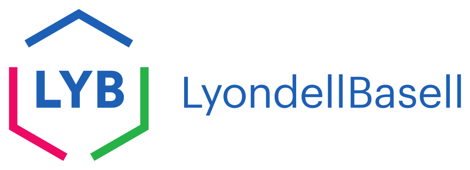

LyondellBasell
LyondellBasell은 네덜란드에 법인을 두고 휴스턴에 미국 사업 본부를 둔 다국적 화학회사이다. 폴리에틸렌과 폴리프로필렌 기술의 최대 라이선스 제공사이다.
최종 업데이트

LyondellBasell는 어떤 브랜드인가
LyondellBasell은 에틸렌, 프로필렌, 폴리올레핀, 산소첨가연료를 생산하는 다국적 화학회사이다. 폴리에틸렌과 폴리프로필렌 생산 기술을 다른 사업자에게 제공하는 라이선스 사업도 전개한다.
네덜란드에 법인을 두고 휴스턴의 Williams Tower에 글로벌 본사를 운영하며 런던에도 사무소를 둔다. 2016년 기준 미국에서 세 번째로 큰 독립 화학 제조사였으며, 세계에서도 세 번째로 큰 독립 화학 제조사로 소개됐다.
미국 사업은 파산보호 절차를 거친 뒤 재편됐고 회사 주식은 뉴욕증권거래소에 상장됐다.
LyondellBasell는 어떻게 시작되고 성장했나
회사의 기반은 1985년 Atlantic Richfield Company의 시설에서 출발했다. 1997년 Occidental Chemicals 및 Millennium Chemicals와의 주식 교환을 통해 합작사 Equistar Chemicals를 구성했으며, 이후 다른 파트너의 지분을 인수해 완전한 통제권을 확보했다.
1998년에는 ARCO Chemical을 $5.6 billion에 인수했고 2004년에는 Millennium Chemicals을 $2.3 billion 규모의 주식 교환으로 인수했다. 2007년 12월 Basell Polyolefins가 Lyondell Chemical Company를 $12.7 billion에 인수하면서 새로운 회사가 형성됐다.
LyondellBasell의 브랜드 아이덴티티는 무엇인가
폴리에틸렌과 폴리프로필렌을 직접 생산하는 동시에 관련 생산 기술의 최대 라이선스 제공사라는 점이 구별되는 특징이다.
LyondellBasell의 대표 제품과 서비스는 무엇인가
주요 생산 품목은 에틸렌, 프로필렌, 폴리올레핀, 산소첨가연료이며, 폴리에틸렌과 폴리프로필렌 관련 기술 라이선스도 제공한다. 2016년에는 휴스턴 Ship Channel의 La Porte 제조단지에 연간 1.1 billion pounds의 폴리에틸렌을 생산하는 공장을 건설한다고 발표했다.
Corpus Christi 에틸렌 공장은 2017년 확장을 마쳐 생산능력을 50 percent 늘리고 연간 2.5 billion pounds 규모로 확대했다. 2018년에는 Karlsruhe Institute of Technology와 폐플라스틱을 단량체로 분해해 중합 공정에 재사용하는 촉매와 공정 기술 개발을 추진했다.
LyondellBasell 로고는 어떻게 변해왔나
자주 묻는 질문
LyondellBasell는 어느 나라 브랜드인가요?
LyondellBasell는 네덜란드의 에너지·산업재 브랜드입니다.
LyondellBasell는 언제 설립되었나요?
LyondellBasell는 1985년 설립되었습니다.
LyondellBasell의 브랜드 아이덴티티는 무엇인가요?
폴리에틸렌과 폴리프로필렌을 직접 생산하는 동시에 관련 생산 기술의 최대 라이선스 제공사라는 점이 구별되는 특징이다.
LyondellBasell의 대표 제품은 무엇인가요?
주요 생산 품목은 에틸렌, 프로필렌, 폴리올레핀, 산소첨가연료이며, 폴리에틸렌과 폴리프로필렌 관련 기술 라이선스도 제공한다.
LyondellBasell는 현재 어떤 상태인가요?
미국 사업은 2009년 1월 Chapter 11 파산보호를 신청한 뒤 2010년 4월 절차를 종료했다.
LyondellBasell의 본사는 어디에 있나요?
LyondellBasell의 본사는 휴스턴에 있습니다(위키데이터 기준).
LyondellBasell의 공식 웹사이트는 어디인가요?
LyondellBasell의 공식 웹사이트는 https://www.lyondellbasell.com/ 입니다.
출처와 검증
LyondellBasell 관련 참고: 공식 웹사이트 · 위키데이터 Q899255 · 영어 위키백과. 브랜드명은 한글과 원어를 함께 표기하되 데이터에 없는 표기는 만들지 않습니다. 기원 국가·설립연도는 검수된 정의문에서 확인된 값을 우선하고, 없을 때만 공식 웹사이트 URL이 일치하는 위키데이터 개체의 값을 씁니다. 위키데이터 값은 2026-09-12 기준입니다.